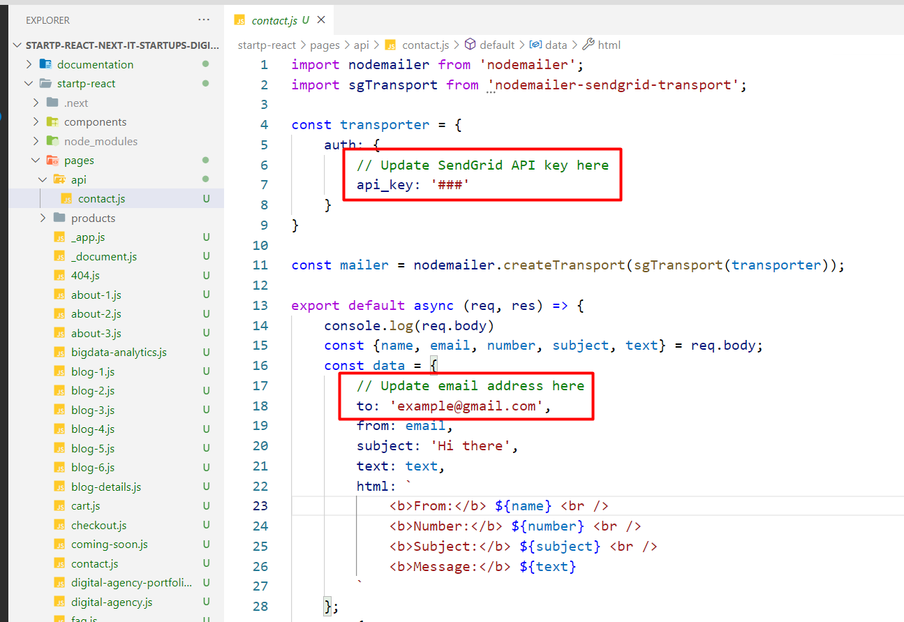
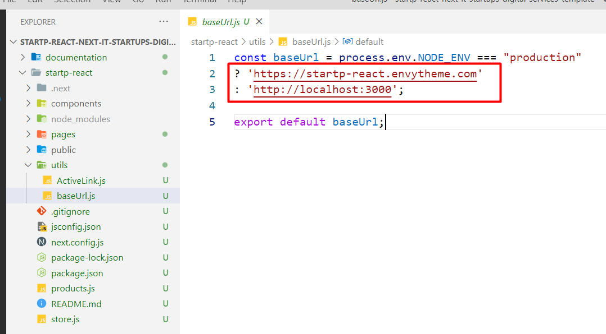

Introduction
StartP - React Next IT Startups & Digital Services Template
Setup Development Environment
To kickstart the development of the web app with StartP, at first need to setup the react development environment.
Following tools are needed to setup a react dev environment:
- Node JS
NodeJS works as a node package manager behind the scene. It is recommended to download and install the latest version of Node JS from its official site https://nodejs.org/en/
Preparation
You'll need to install Node.js >=v14.16+ (Recommended Version) (NPM comes along with it) and serve (an NPM package)
Use command line tool i.e. PowerShell or terminal and navigate to the project(StartP) root. This is PowerShell in windows and terminal on mac/linux.
Let's have a look on the setup process:Use terminal and navigate to the project root.
Then run : npm install
Then run : npm run dev
It'll return something like this in the console:
> project@3.5.0 dev drive:\project
> next
[ wait ] starting the development server ...
[ ready ] started server on http://localhost:3000 ...
[ event ] compiled successfully
Now, in the browser go to localhost:3000
For Production Build
Run : npm run build
Then Run : npm run start
See the official next.js doc here
Pages and Components Info
- IT Startup Home (/pages/it-startup.js)
- IT Startup Home 2 (/pages/it-startup-2.js)
- Bigdata Analytics Home (/pages/bigdata-analytics.js)
- Digital Agency Home (/pages/digital-agency.js)
- Digital Agency Portfolio Home (/pages/digital-agency-portfolio.js)
- Hosting Home (/pages/hosting.js)
- IOT Home (/pages/iot.js)
- Machine Learning Home (/pages/machine-learning.js)
- Machine Learning Home 2 (/pages/machine-learning-2.js)
- PC Repair Home (/pages/pc-repair.js)
- About Page (/pages/about-1.js)
- Blog Page (/pages/blog-1.js)
- And more....
Common Components:
- Footer (/components/_App/Footer.js)
- GoTop (/components/_App/GoTop.js)
- Layout (/components/_App/Layout.js)
- Navbar (/components/_App/Navbar.js)
- Navbar Style Two (/components/_App/NavbarStyleTwo.js)
- Navbar Style Three (/components/_App/NavbarStyleThree.js)
- Navbar Style Four (/components/_App/NavbarStyleFour.js)
- Navbar Style Five (/components/_App/NavbarStyleFive.js)
- Navbar Style Six (/components/_App/NavbarStyleSix.js)
- Blog Post (/components/Commom/BlogPost.js)
- Blog Post Style Two (/components/Commom/BlogPostStyleTwo.js)
- Blog Post Style Three (/components/Commom/BlogPostStyleThree.js)
- CTA (/components/Commom/CTA.js)
- CTA Style Two (/components/Commom/CTAStyleTwo.js)
- Feedback (/components/Commom/Feedback.js)
- Feedback Style Two (/components/Commom/FeedbackStyleTwo.js)
- Feedback Style Three (/components/Commom/FeedbackStyleThree.js)
- Feedback Style Four (/components/Commom/FeedbackStyleFour.js)
- Feedback Style Five (/components/Commom/FeedbackStyleFive.js)
- Fun Facts Area (/components/Commom/FunFactsArea.js)
- Newsletter (/components/Commom/Newsletter.js)
- Newsletter Style Two (/components/Commom/NewsletterStyleTwo.js)
- Page Banner (/components/Commom/PageBanner.js)
- Partner (/components/Commom/Partner.js)
- Partner Style Two (/components/Commom/PartnerStyleTwo.js)
- Recent Works (/components/Commom/RecentWorks.js)
- Team (/components/Commom/Team.js)
- Team Style Two (/components/Commom/TeamStyleTwo.js)
Template Features:
- ES6+
- React JS 17+
- Next JS 12+
- Bootstrap v5.x
- Simple client-side routing (page based)
- Easy Customization
- React Modal Video
Dependencies
Here are the dependencies list which being used in the StartP React Template:
"dependencies": {
"animate.css": "^4.1.1",
"axios": "^0.21.4",
"next": "^12.0.4",
"nodemailer": "^6.7.1",
"nodemailer-sendgrid-transport": "^0.2.0",
"react": "^17.0.2",
"react-accessible-accordion": "^3.3.5",
"react-dom": "^17.0.2",
"react-feather": "^2.0.9",
"react-hook-form": "^6.15.8",
"react-masonry-component": "^6.3.0",
"react-owl-carousel3": "^2.2.5",
"react-redux": "^7.2.6",
"react-slick": "^0.28.1",
"react-tabs": "^3.2.3",
"react-toast-notifications": "^2.5.1",
"redux": "^3.6.0",
"redux-devtools-extension": "^2.13.9",
"sass": "^1.43.4",
"sweetalert2": "^10.16.9",
"sweetalert2-react-content": "^3.3.3"
}
Change Default Home Page
The default home page is index.js which placed in /pages/index.js if you want to change this default to home page two as default home then just take backup your index.js & make home-two.js to index.js & that is.
Fonts Used
By default, the template loads Poppins font from Google Web Font Services, you can change the font with the one that suits you best. Google Fonts
You will find the font code in the "style.scss file: public/css/style.scss
@import url('https://fonts.googleapis.com/css?family=Poppins:100,100i,200,200i,300,300i,400,400i,500,500i,600,600i,700,700i,800,800i,900,900i');
$font-family: 'Poppins', sans-serif;
Note: After SCSS file run then it will be work
How to Run The SCSS File
Please open the file Visual Studio Code Editor. And follow the video tutorial.
Here the Link: https://www.youtube.com/watch?v=0MWmv1Gvv5w
Contact Form Setup
Please create the SendGrid API key follow the below link:
https://sendgrid.com/docs/ui/account-and-settings/api-keys/
Please follow the screenshot instruction file path: pages/api/contact.js
Following by the screenshot update the baseUrl
24-Hour Turnaround Support:
Quick, Dedicated & Professional Support!
We only provide support through our ticketing system. Please submit your ticket by visiting the EnvyTheme Support System.
For any pre-purchase query, please use live chat on the item demo site also, email, and the item’s comment section on ThemeForest. Thanks!